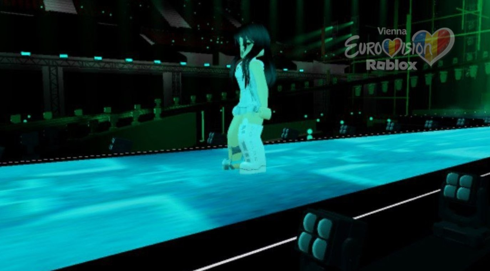
Roblox × Eurovision Fan Broadcast
Один эфир. Девять стран. Ваш голос решает.
Vienna Eurovision — фестивальный эфир, который команда энтузиастов строит внутри Roblox: сцена, свет, выступления и открытое голосование зрителей — как в настоящем финале.
О проекте
Фан-эфир, сделанный как настоящий
Vienna Eurovision — это независимый проект внутри Roblox: команда строит сцену, свет и постановку номеров, а владельцы эфира ведут трансляцию так, будто это настоящий конкурсный вечер. Зрители следят за выступлениями в реальном времени и голосуют за понравившуюся страну — честно и открыто.
Каждый раунд собирает по несколько тысяч зрителей одновременно. Система голосования защищена от накруток: один зритель — один голос за раунд, результат виден сразу после закрытия голосования.
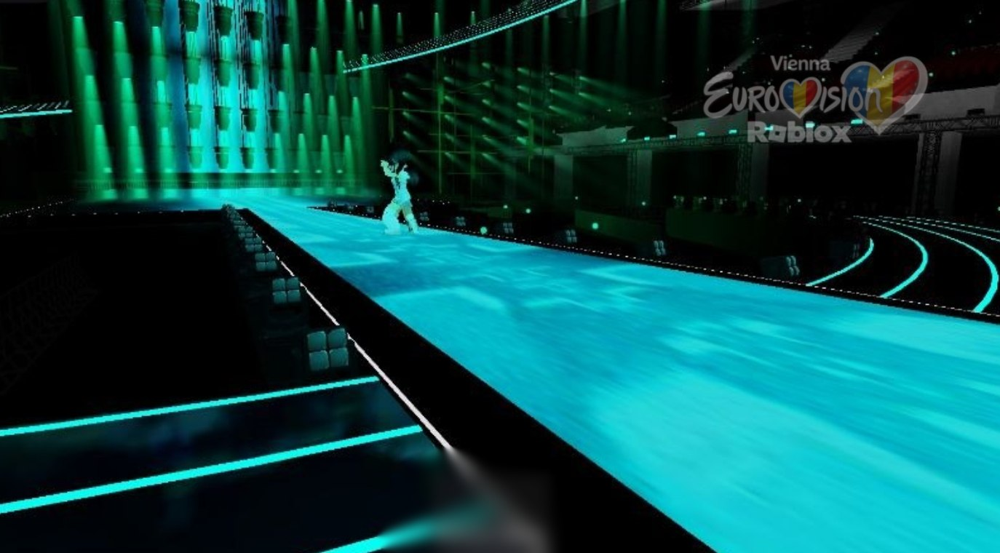
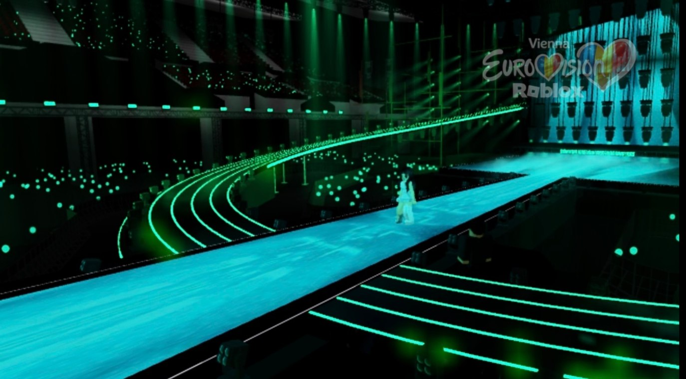
Первый раунд
Девять стран выходят на сцену
- 01Belgium🇧🇪
- 02Ukraine🇺🇦
- 03Moldova🇲🇩
- 04Romania🇷🇴
- 05Israel🇮🇱
- 06Denmark🇩🇰
- 07Greece🇬🇷
- 08Luxembourg🇱🇺
- 09Australia🇦🇺
С репетиций
Кадры со сцены
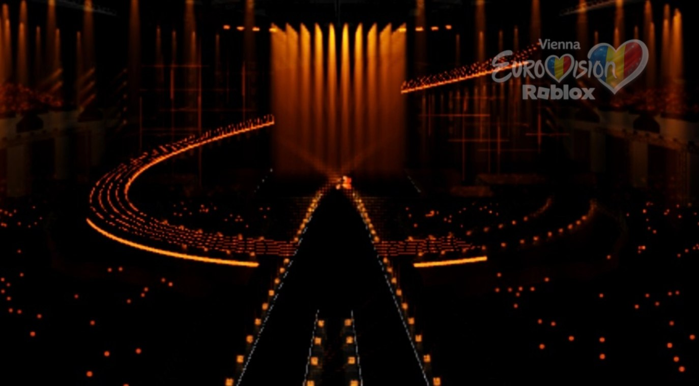
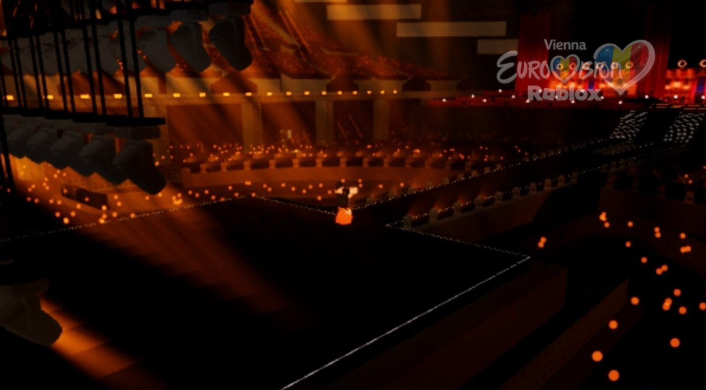
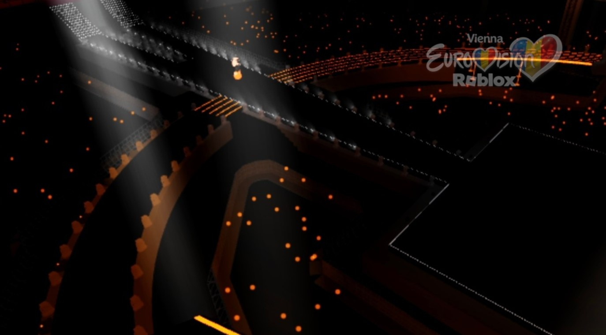
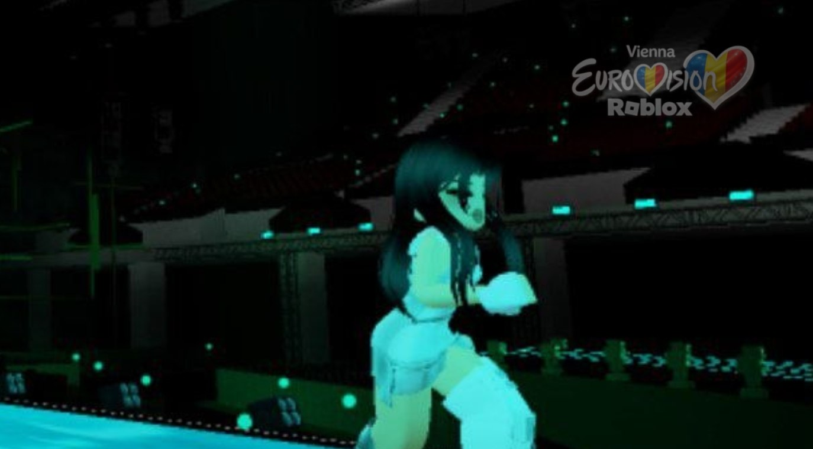
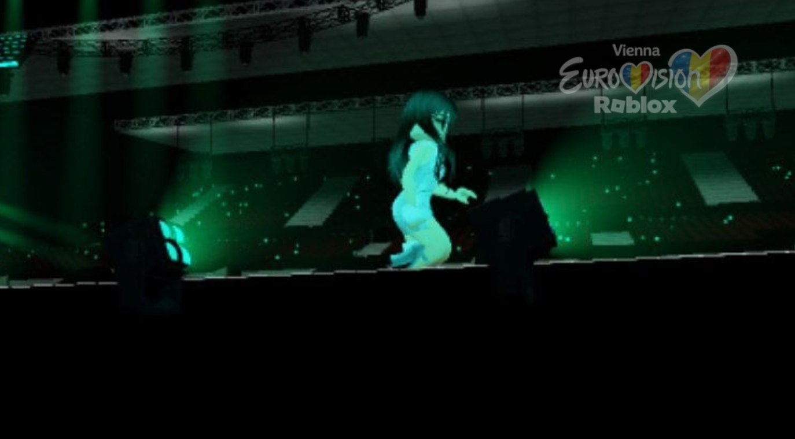
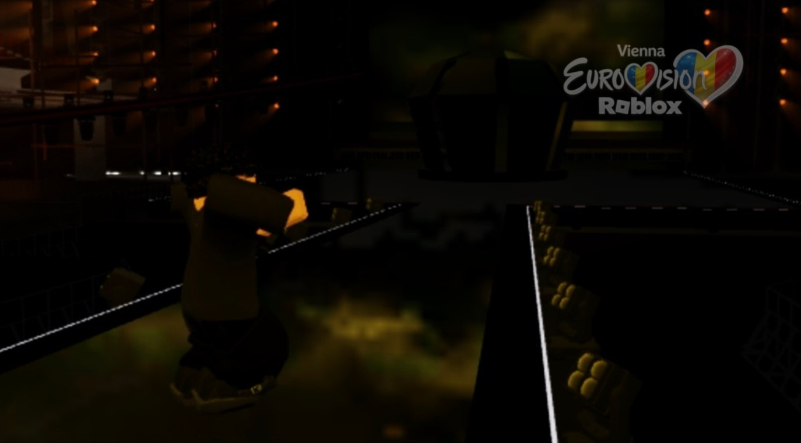
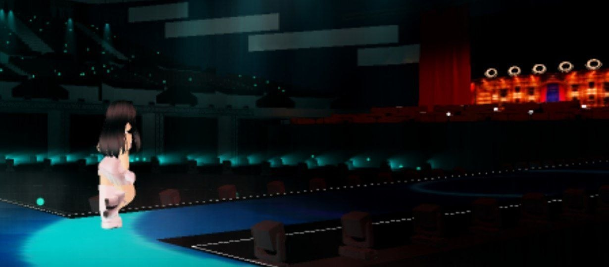
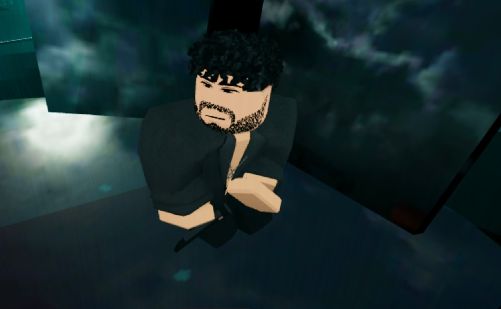
Голосование
Ваши баллы решают, кто пройдёт дальше
Система баллов — классическая: 1–8, 10 и 12 очков от каждого зрителя за раунд. Голосование открывается сразу после эфира и закрывается по таймеру.
Открыть голосованиеГолосование откроется отдельной страницей после старта эфира